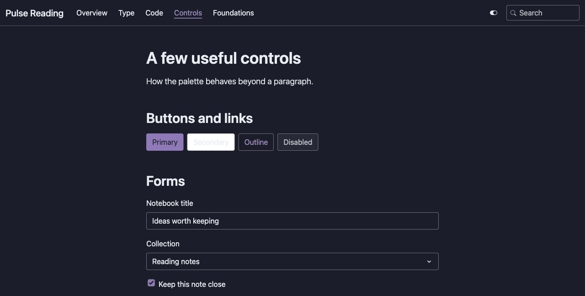
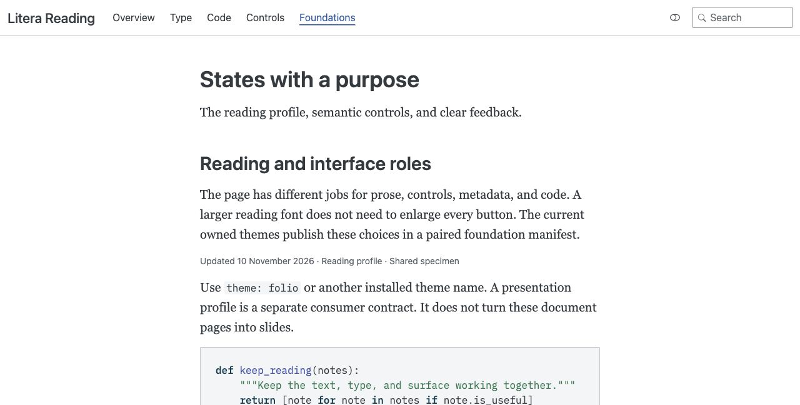
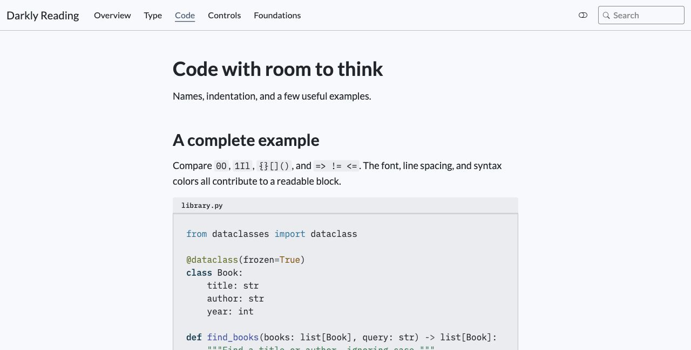

Current review / Preserved evidence
This archive preserves the three affected themes’ 10 November observations and 42 screenshots. The source snapshot is 5650edb; its full four reports and complete audit remain in that Git revision. The local full backup also remains in the Elegant folder.
| Context | Reported issue | Minimum |
|---|---|---|
| Pulse Reading dark | Secondary button: pale text on white fill | 1.178:1 |
| Litera Reading, both modes | Selected navigation: inherited blue/white pair | 3.712:1 |
| Darkly Reading light | Sampled syntax colors on code surface | 4.343:1 |
The older type/design scores were Pulse Reading 87/89, Litera Reading89/93 and Darkly Reading88/92. Prose leading was already1.60 and remains1.60 in the repair.



Raw observations · Capture dates and SHA-256 inventory · All November10 scores · Original source provenance